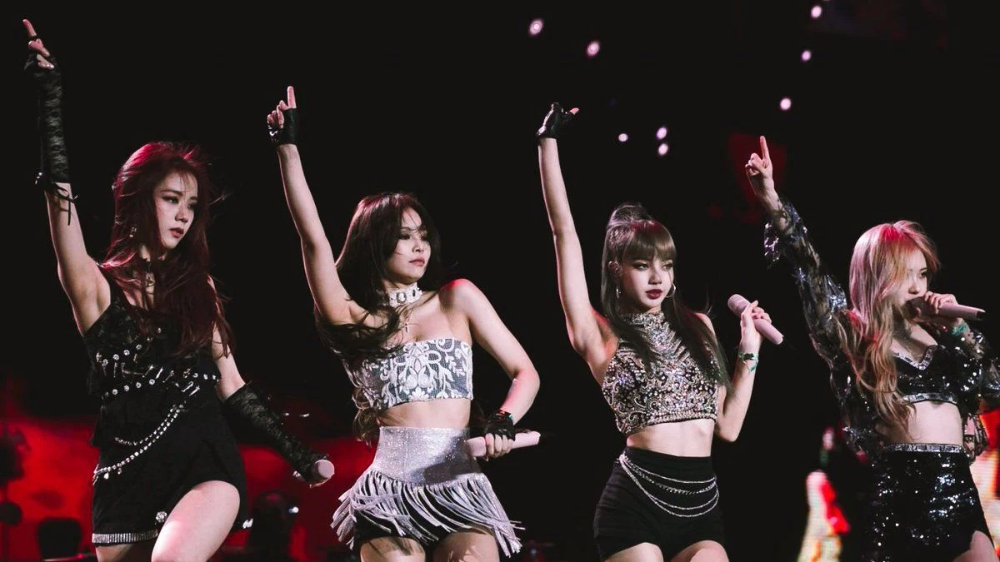
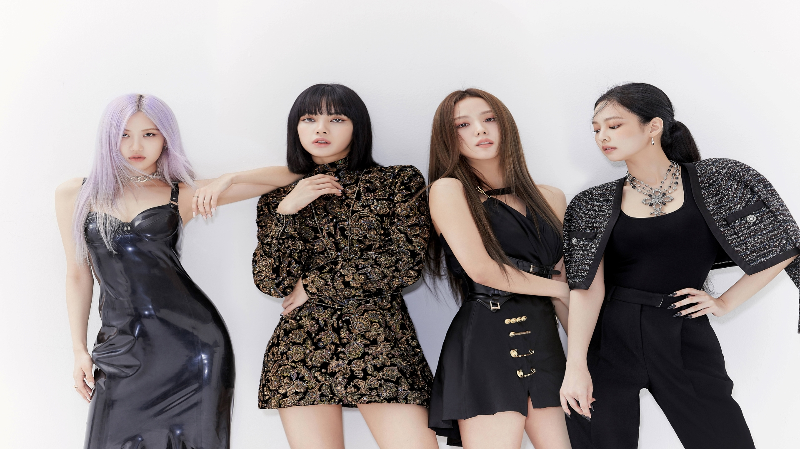

Blackpink (bahasa Korea: 블랙핑크, digayakan sebagai BLɅƆKPIИK) adalah grup vokal wanita asal Korea Selatan. Blackpink dibentuk oleh YG Entertainment dengan beranggotakan empat orang, diantaranya Jennie, Jisoo, Lisa, dan Rosé.
Blackpink merupakan grup vokal wanita Korea yang memiliki lagu dengan posisi tertinggi di Billboard Hot 100, berada di nomor 55 dengan "Ddu-Du Ddu-Du",[2] dan di Billboard 200, berada di nomor 40 dengan EP berjudul Square Up.[3] Blackpink merupakan grup pop Korea perempuan pertama dan satu-satunya yang memasuki dan memuncaki Emerging Artists Billboard.'[2] Mereka juga merupakan grup pop Korea wanita pertama yang mempunyai empat lagu di Billboard World Digital Song Sales.[2][4] Di waktu yang sama saat rilis, "Ddu-Du Ddu-Du" memecahkan rekor sebagai video musik Korea yang paling banyak ditonton di YouTube dalam waktu 24 jam, sebelum dilewati oleh BTS dengan video musik mereka yang bertajuk "Idol". Read more